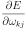
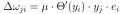

Bernd Porr
 . The goal is to learn this function with the help of
examples
;
. The goal is to learn this function with the help of
examples
;
 .
.
The following sections show how learning of  with the help
fo examples can be achieved. This is called “inductive learning”.
with the help
fo examples can be achieved. This is called “inductive learning”.
We 1st introduce a linear neuron, then deriving the math for a linear deep network and finally introducing non-linearities into the deep network. This allows to introduce the math in a more gradual way.
Fig. 1A shows a neuron in a single layer (Rosenblatt, 1958).
Its activation is  and is the th neurn in this layer.
and is the th neurn in this layer.
 is the current time-stamp. The input activity to the neuron
is the current time-stamp. The input activity to the neuron
 is weighted by
is weighted by
 and summed up to:
and summed up to:
from the introduction is here a simple linear
combination of input activities where
had to be learned
to approximate .
which converts the input activities to output activities
(Eq. 1).
This is achived by minimising the error:
where  is the desired output value and the actual output value.
The goal is to minimise the square of the error:
is the desired output value and the actual output value.
The goal is to minimise the square of the error:
 and the weight
. In this example if
the weight is slightly increased the squared error is also increased
which is not desirable. However, if increasing
reduces
the squared error then it's a good idea to keep changing the
weight in this direction. This approach is called gradient
descent.
and the weight
. In this example if
the weight is slightly increased the squared error is also increased
which is not desirable. However, if increasing
reduces
the squared error then it's a good idea to keep changing the
weight in this direction. This approach is called gradient
descent.
. We simply insert Eq. 2,
3 and 4 into Eq. 5:
 is the learning rate or the “step change”. The
learning rule Eq. 11 is simply a multiplication of the
input activity
is the learning rate or the “step change”. The
learning rule Eq. 11 is simply a multiplication of the
input activity  with the error (Widrow and Hoff, 1960).
with the error (Widrow and Hoff, 1960).
Fig. 2 shows now a network with multiple layers.
The forward progression of the signals  from the input to
the output and follows exactly the same recipe as for the single
layer network above using Eq. 2.
Also the error
from the input to
the output and follows exactly the same recipe as for the single
layer network above using Eq. 2.
Also the error  at the output layer can simply be calculated
as the difference between the actual output and the desired output
at the output layer can simply be calculated
as the difference between the actual output and the desired output  (see
Eq. 3). The problem is how to calculate the
internal errors und and how they change the hidden weights
(see
Eq. 3). The problem is how to calculate the
internal errors und and how they change the hidden weights
 (see Eq. 10):
(see Eq. 10):
| (15) |
|  |  |
(16) | |
| (17) |
leads then to:
 |
(18) |
The crucial question is if the introduction of the activation function changes the learning rule. Luckily not much. Looking at Eq. 10 it becomes directly clear that the chain rule is simply expanded by another term:
| (20) |
|  | (21) |
 |
(22) |
Strictly, the activation function needs to be differentiable. However, it turned out that the one way rectifier (Rectifiying Linear Unit = ReLU) works extremely well (Fukushima, 1975):
 |
(23) |
 or
or
 .
.
This document was generated using the LaTeX2HTML translator Version 2021.2 (Released July 1, 2021)
The command line arguments were:
latex2html deep-learning-analytics -split 1 -dir docs -t 'Deep learning analytics' -address ''
The translation was initiated on 2023-05-08
![\includegraphics[width=\textwidth]{one_layer}](img7.svg)